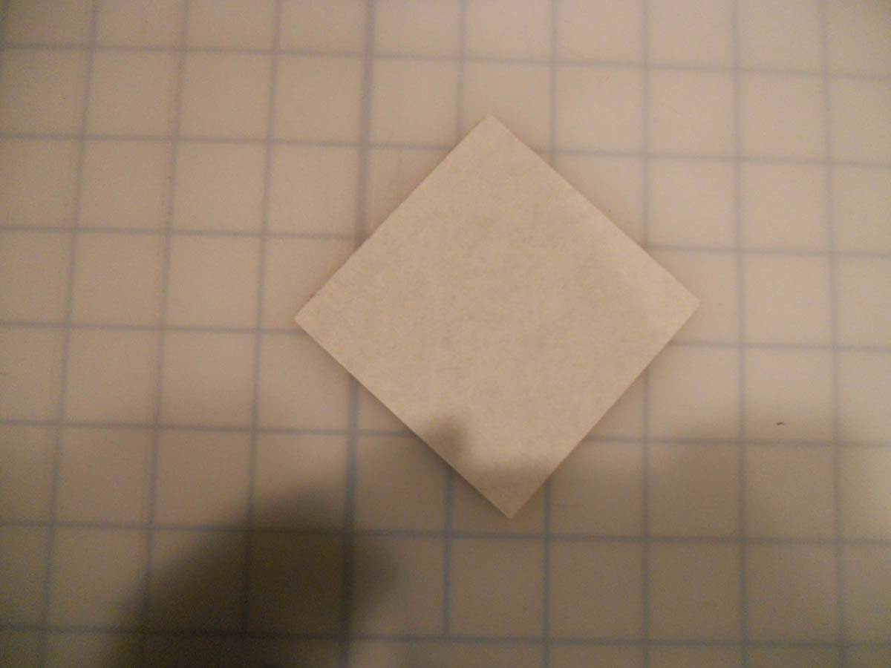
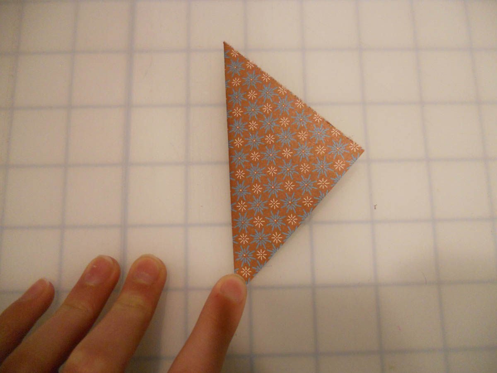
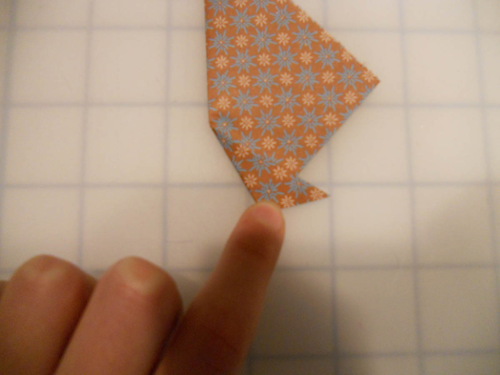
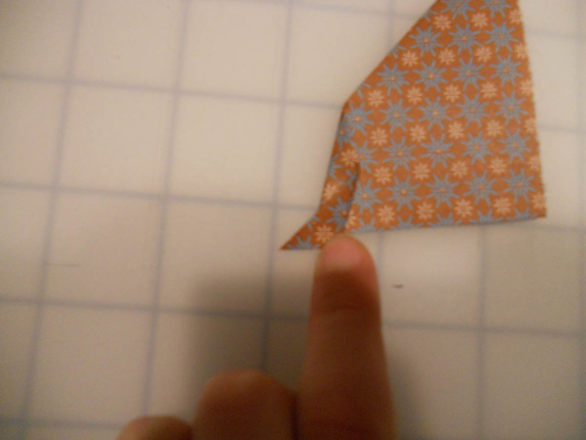
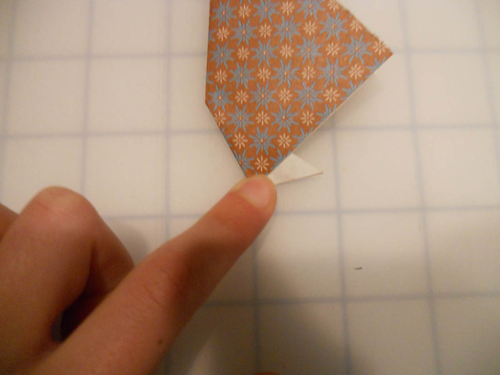

How to do an Origami Crimp Fold
A crimp fold is either a combination of either two inside-reverse or two outside-reverse folds. In this tutorial, I will simply show you the two inside-reverse fold combination.

1. For this example, we will start with a
square of paper, white side up and oriented
as shown.

2. Valley fold the left tip over to the right.

3. To precrease for this crimp fold, we
will valley fold the bottom tip to the right...

4. And then back to the left. Unfold back to
step 2.

5. Inside reverse fold on step 2's crease...
6. Then inside-reverse fold on step 4's crease.
You have made a crimp fold!